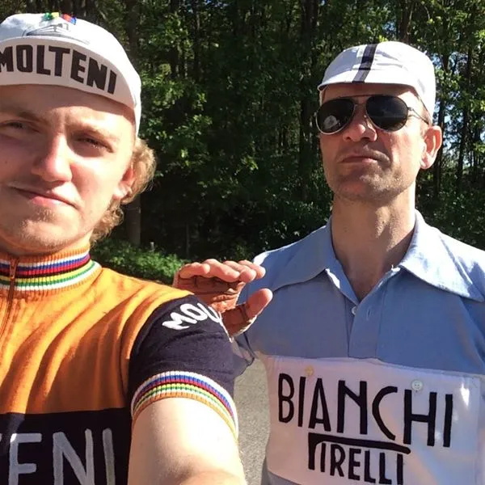

Fausto Coppi spottet i Vejle

Eventyret fortsætter! Først Eddy Merckx og så Fausto Coppi. Mestrenes mester, campionissimoen!
Squadra Molteni’s pressemedarbejder, Peter Hansen, havde taget videokamera og fotoapparat med ud i de Vejlensiske bakker.
Formålet var at spotte Molteni rytterne på træningstur og skyde nogle gode billeder af rytterne en solbeskinnet junidag.
Pater Hansen lagde sig på “lur” ved den velkendte serpentinerstigning fra Haraldskær op mod Nr. Vilstrup.
En kendt bakke som træningsturene oftest afsluttes med.
En Bianchi rytter
Rygtet ville også vide, at Squadra Molteni´s Kasper Sørensen var på trænings rekognocering på Kongeetapen til Post Danmark Rundt.
Bedst som Peter lå og ventede med sit kamera dukkede en rytter op.
Det var dog tydeligt at det ikke var en orange Molteni rytter.
Da rytteren kom nærmere fik Peter åndenød.
Peter Hansen fortæller:
– Jeg så en rytter for foden af bakken. Kunne straks se, at det ikke var en orange Molteni rytter. Farverne på cykeltøjet og cyklen virkede dog bekendt. Da rytteren kom nærmere var jeg ved at falde bagover af forundring.
Den gamle Bianchi cyklel i stål, den lyseblå Bianchi / Pirelli uldtrøje, de markante Aviator briller og det lette tråd.
Jo, der var ingen tvivl! Det var selveste Fausto Coppi.
Fik et portræt af Fausto Coppi
Jeg råbte ham an, og sørme om han ikke vendte rundt og kørte ned til mig.

Det var den vildeste oplevelse! Ikke bare gud, men gudernes gud! Mestrenes mester! Campionissimoen! Vi fik en lille sludder på Italiano.
Coppi kunne fortælle, at han var i DK for at forberede sig til næste weekend’s klassiske løb på den danske løbskalender: Fyn Rundt på 180 km.
En portræt blev det også til!.
Der blev selvfølgelig udvekslet adresser, email, mobilos, instagram mv.
– Jeg spurgte om ikke jeg måtte få en noget af hans sved på dåse. Et eller andet måtte jeg have fra ham! Så der blev tappet 5 ml ægte Coppi sved.
I en alder af 96 år måtte Peter Hansen konstatere, at Coppi stadig holder sig frisk! Bliver spændende at se ham dyste sammen med Squadra Molteni rytterne i næste weekends Fyn Rundt.